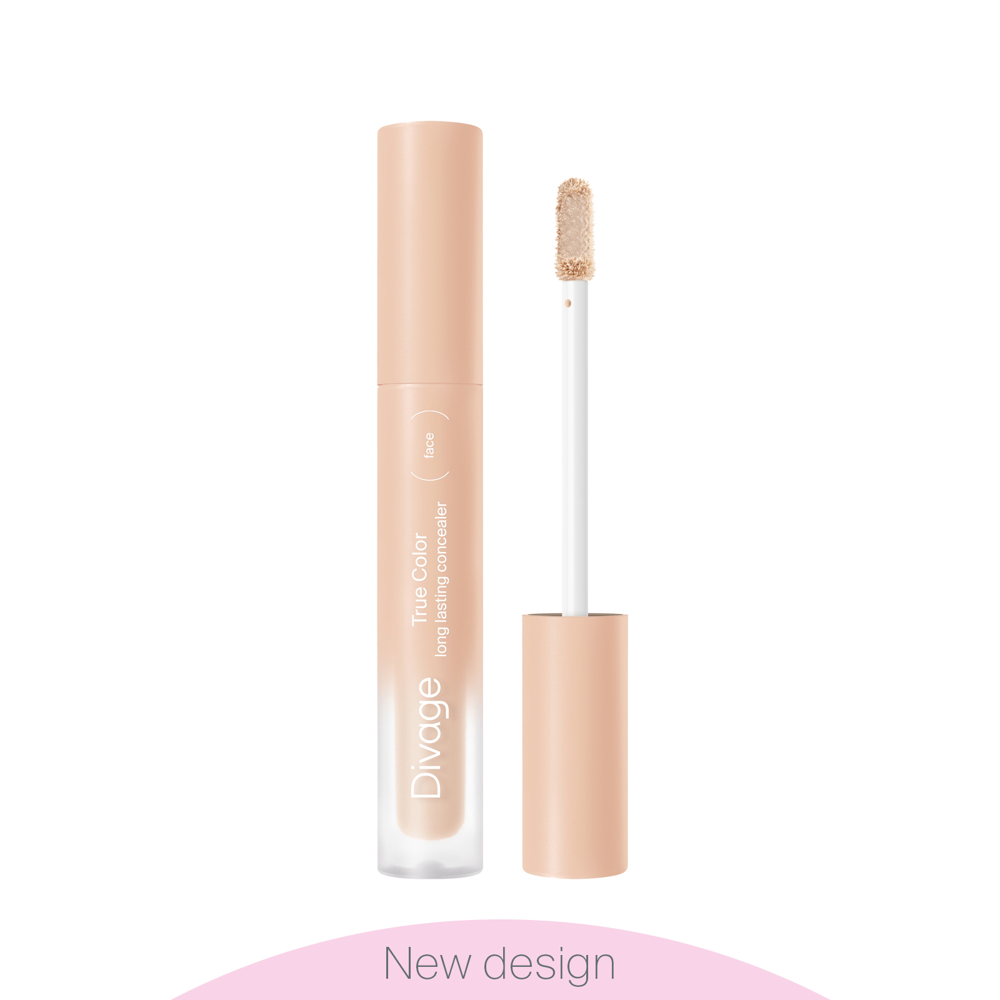
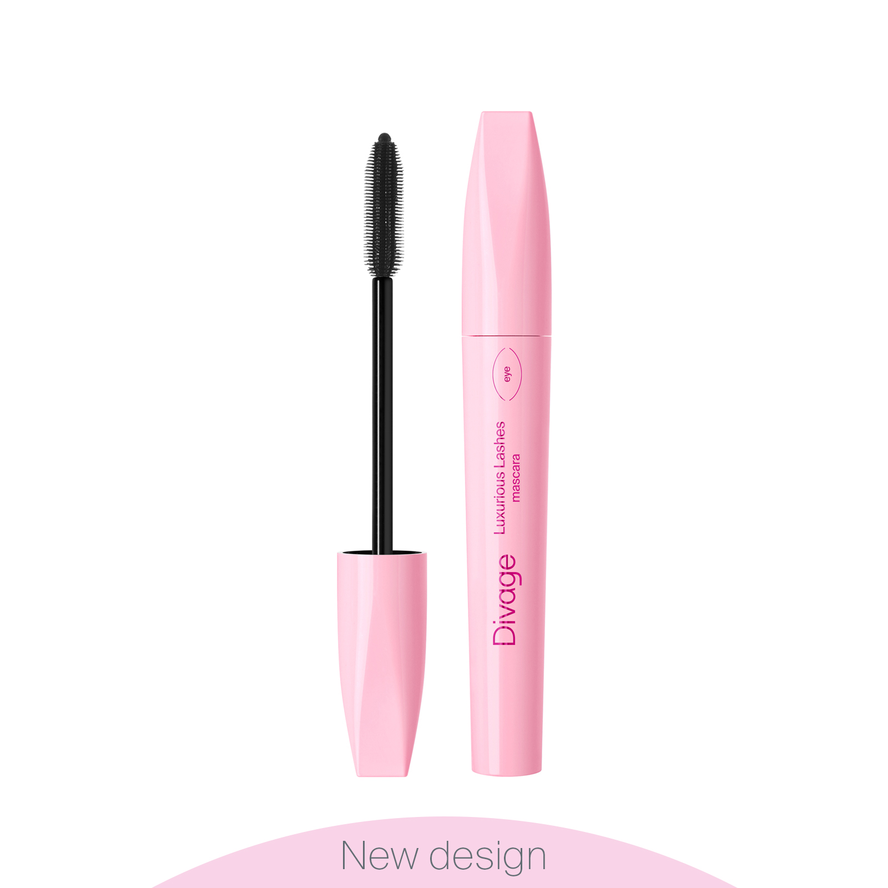

Румяна
Универсальный продукт, который можно наносить не
только на щеки и скулы, но и на веки, шею и подчеркнуть
рельеф ключиц.
Консилер

Легкий кремовый консилер с покрытием средней плотности
и матовым финишем. Эффективно скрывает несовершенства.
Подводка для глаз
Подводка имеет удобный фетровый аппликатор, который
позволяет прорисовать тонкую ровную стрелку без особых
усилий.
Тени
Матовые (для естественного образа) и сияющие (для
раскошного образа) оттенки, прекрасно сочетающиеся между
собой.
Тональный крем
Тональный крем перекрывает эстетические недостатки,
делает кожу мягкой, сияющей и нежной.
Гель для бровей
Пантенол, экстракт листьев чайного дерева и другие
ухаживающие компоненты придают волоскам глянцевый блеск.
Тушь

Тушь для ресниц с пластиковой щёточкой. Роскошные длинные
и объемные ресницы одним взмахом кисточки.
Палетка
Универсальная палетка для лица, которая содержит
классические матовые румяна и деликатный хайлайтер.
Карандаш
Карандаш для губ с нежной кремовой текстурой и
насыщенным цветом для создания изысканного графичного
макияжа.
Помада
Придает выразительную чувственность губам. Нежная кремовая текстура
легко ложится и обладает длительной стойкостью.
Пудра
Пудра прекрасно скрывает мелкие несовершенства кожи. Обладает
естественным матовым финишем.
Тинт
Этот продукт можно использовать в качестве румян, помады
и даже теней для век. Тинт стойко держится на коже.